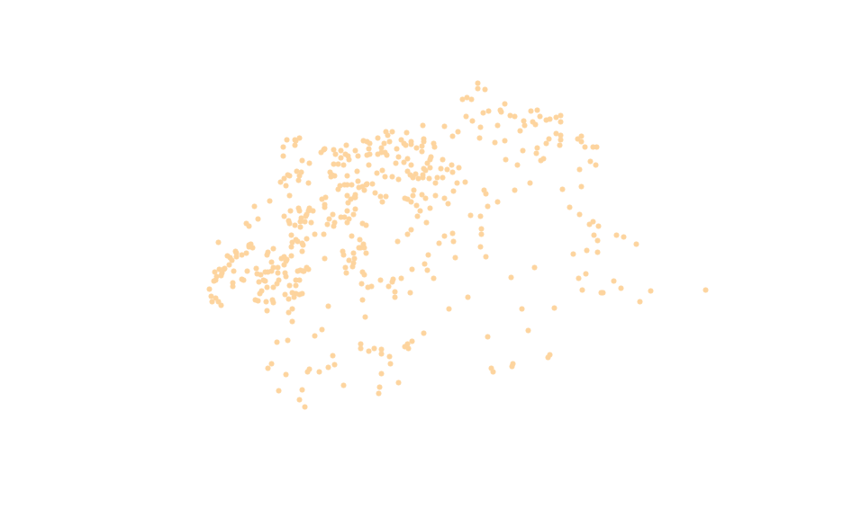
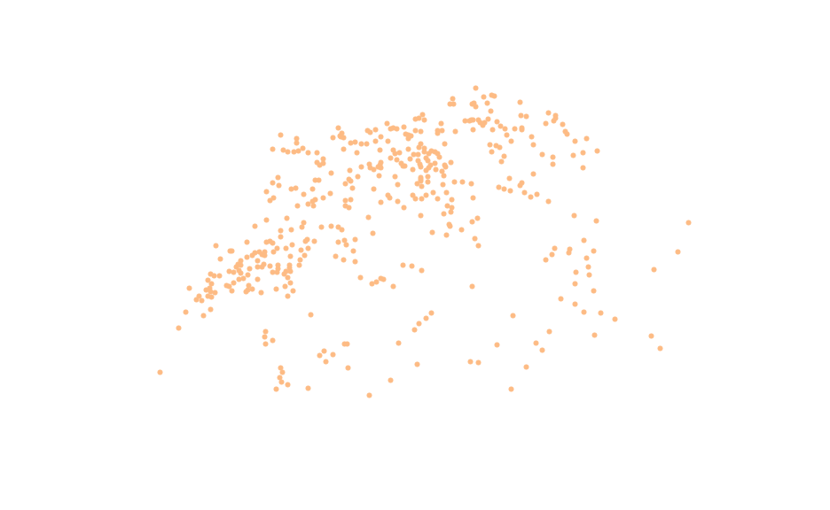
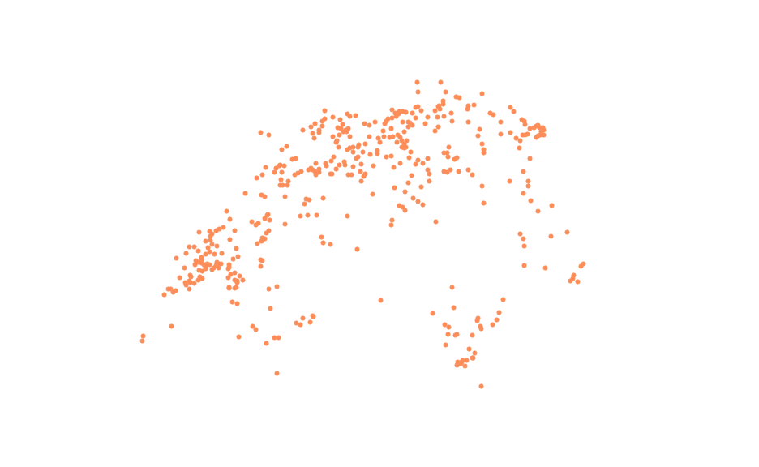

Where Swiss Are Made
A walk through 35 years of naturalization data.
Let's go!
Choose a commune to get started!
What does that mean in comparison?
Find it out
Choose a commune to get started!
Where are communes with low and high ratios?
See it on a map
The
hot spots
of naturalization are concentrated in
three areas
.
Browse the different maps to see them.






Like to look at a different commune?
Restart from the top